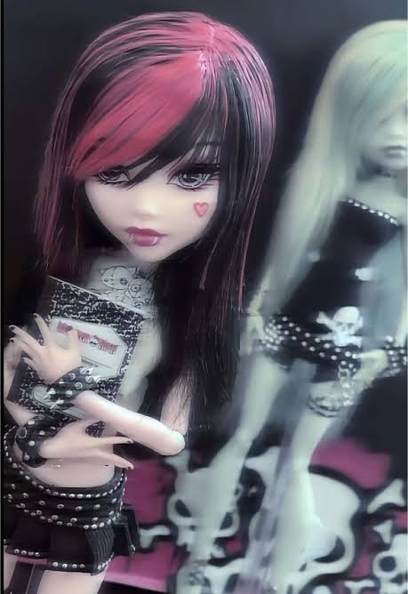
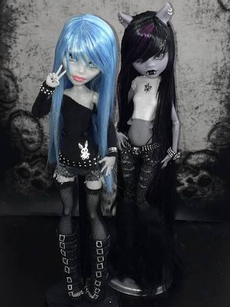
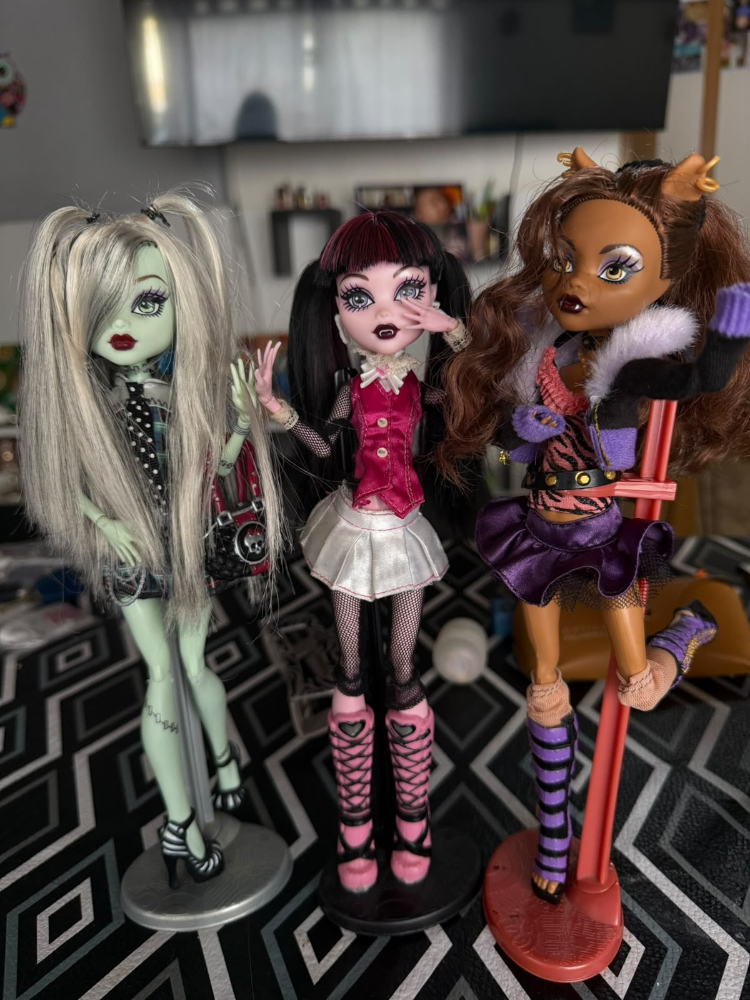
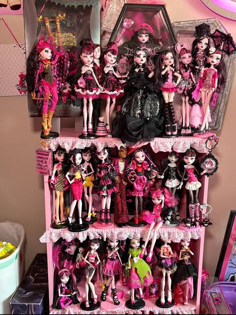

1. Micro-obsesión: Generación 1 de Monster High
Me interesa mucho la Generación 1 de Monster High. Puedo pasar un buen rato mirando publicaciones de venta de las muñecas originales, comparando moldes, leyendo los diarios de los personajes y fijándome en los detalles de diseño de cada uno de los personajes.
Cada una tiene su propio estilo y quedan muy bien acomodadas todas juntas, su diseño es estetico. La G1 tiene una estética que me gusta mucho.

Ficha técnica de mi micro-obsesión
- Temática principal: Monster High Generación 1 (2010-2016)
- Personajes que más miro: Draculaura, Clawdeen, Rochelle, Frankie y Ghoulia
- Qué me llama la atención: el diseño de los rostros, los moldes y los diarios
- Nivel de interés: alto, sobre todo con las muñecas originales
2. Mi colección de Monster High
Colecciono Monster High. Todavía no tengo muchas, pero al estar descontinuadas en el mercado (desde 2016 que no se producen mas g1) tener una es como tener un pedazo de mi infancia y algo que nunca pude tener. Las tres que más quiero tener son:
- Abbey Bominable G1 básica — La hija del Yeti, con una ropa INCREIBLE, tiene un estilo unico y en la serie una personalidad muy fuerte, es mi prioidad.
- Elissabat G1 — La vampira con un diseño gotico, me encanta.
- Ghoulia Yelps básica G1 — La zombie la cual su molde de cara me parece uno de los mejores, aunque en estos dias la basica es una de las mas complicadas y se va arriba de los 200.000 pesos.


“Cada muñeca es una pieza de mi infancia.”
— Luciel Tejeda
Mientras tanto sigo buscando. A veces aparece algo que no esperaba y termino comprándolo.
3. Rankings hiperespecíficos
Top 3 personajes de Monster High G1
- Draculaura G1 — La vampira vegana. Su diseño me parece de los mejores, (es una respuesta un poco basica en la comunidad pero es la verdad).
- Rochelle Goyle G1 — La gárgola francesa. Me gusta su estilo y su personalidad, es bastante ´´romantica´´.
- Clawdeen Wolf G1 — La loba a la moda. Tiene una actitud muy fuerte, igual q Abbey, dice las cosas de frente, se nota reflejado en su diseño.

Top 3 peores decisiones de Mattel
- Hacer la Generación 3 — El cambio de proporciones en el 90% de los personajes y de la estética no me convenció.
- Hacer la Generación 2 — Algunos personajes se salvaron, pero el rediseño general no me gustó tanto.
-
Intentar modernizar algo que ya funcionaba bien— A veces es mejor dejar las cosas como están.
Top 3 lugares para buscar muñecas
- Marketplace (Facebook) — Donde más cosas encuentro y a precios variados.
- Tiendamia — Útil cuando quiero algo específico que no aparece en el país.
- MercadoLibre — A veces aparece algo bueno, aunque suele salir un poco más caro.
Fecha de esta bitácora: .
Si querés saber más sobre el universo original de Monster High, podés mirar la Monster High Wiki y también la página de Mattel Monster High.
Notas extra de coleccionista
- Prioridad actual de búsqueda: Abbey Bominable G1 básica
- Condición preferida: completa o casi completa
- Presupuesto: flexible, pero con límite
- Consejo: siempre pedir fotos reales al vendedor o vendedora antes de comprar